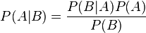
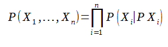

Résumé
Modèles de représentation des connaissances, fondés sur une description graphique des variables aléatoires
Préambules
Un réseau bayésien est en informatique et en statistique un modèle graphique probabiliste représentant des variables aléatoires sous la forme d'un graphe orienté acyclique. Intuitivement, ils sont à la fois :
- Des modèles de représentation des connaissances;
- Des « machines à calculer » les probabilités conditionnelles;
- Une base pour des Systèmes d'aide à la décision.
Cette représentation graphique permet d'exprimer le modèle en question de façon plus intuitive et synthétique.
L'intérêt particulier des réseaux bayésiens est de tenir compte simultanément de connaissances a priori d'experts (dans le graphe) et de l'expérience contenue dans les données.
Les réseaux bayésiens permettent ainsi de décrire l'incertitude de faits, de construire des probabilités jointes, ainsi que de retrouver toutes les probabilités conditionnelles à partir de ces dernières.
Ces réseaux sont mathématiquement régis par le Théorème de Bayes que nous détaillerons plus bas.
Origines
Les réseaux Bayésiens sont nommés en référence au travaux du mathématicien Thomas Bayes.
Le théorème de Bayes appelé aussi « probabilité des causes » découle des probabilités conditionnelles et des probabilités totales,
En intelligence Artificielle les systèmes doivent être évolutif et apprendre de leurs expérience afin de comprendre les liens entre les causes et les effets dans le but de faire évoluer son comportement en prenant la décision la plus approprié en fonction de son environnement.
Principes
Grap orienté acyclique: construction des graphes
Les réseaux Bayésiens sont des modèles graphique probabiliste associé à une distribution jointe de probabilité
Les réseaux sont acyclique car les effets ne peuvent pas influencé les causes, ils sont également orientés afin de représenter les dépendances entre les variables
Pour construire un graph il faut:- définr les variables et leurs modalité
- établir les liens entre les varaibles
- dresser les tables de probabilités à partir des données statistiques
circulation de l'information(causalité)
Dans un réseau bayésien la circulation de l'informations est représenter par le sens des arcs. (l'information est qualititative)
Elles représentent l'influence entre les différentes informations.
- Connexion convergente: deux informations mène à la même conclusion
- Connexion en série: l'association de cause produit un effet
- Connexion divergente: une cause engendre deux effets distincts

Un noeud dépend uniquement de ses parents
Les inférences
Apprentissage des réseaux bayésiens
Chaque événement est au départ recensé dans une table de donnée. Ce sont des données expérimentales. A partir de là, on établit des liens entre les événements que l’on représente à l’aide d’un graph dit acyclique orienté. C'est-à-dire qu’il ne peut exister de boucle et que chaque nœud (ou événement) fils dépend d’un nœud père. Seulement un lien direct peut exister entre un événement B et un événement A.
La distribution jointe :
La probabilité d’un réseau définit par des événements correspond au produit des probabilités conjointes de chaque événement. On exprime par la probabilité d’un événement sachant ses parents . C'est-à-dire la probabilité d’un nœud sachant celle des parents.
La Loi de Markov : On remonte qu’à un rang au dessus i.e. au parent. Un fils ne dépend que de ses parents et non des générations précédentes. Ainsi, grâce au graph acyclique oriente crée, on peut ensuite faire le tableau de probabilité. On calcul chaque probabilité conjointes des fils sachant celle des parents. Exemple : Séisme / Cambriolage

L’alarme peut se déclencher soit à cause d’un cambriolage, soit à cause d’un séisme. Les probabilités conditionnelles alarme sachant cambriolage ou/et séisme sont déduites en fonction des probabilités que tel ou tel événement survienne.
Calcul des probabilités jointes :
1) Apprentissage des paramètres :
A partir des données disponibles (tableaux de donné), on cherche à calculer les lois de probabilité de chaque évènements. Ces derniers peuvent être complètes ou non. Une première approche consiste à calculer les probabilités selon la fréquence d’apparition d’un évènement dans la base de données. Cette méthode est appelée maximum de vraisemblance, tel que :

Dans la formule précédente Ni,j,k est le nombre d’événements dans la base de données pour lesquels la variable est dans l’état k et ses parents sont dans la configuration cj. Dans certains cas, les données sont incomplètes et sont observées que partiellement. Cependant, le calcul de probabilité doit se faire. La méthode la plus couramment utilisée est fondée sur l’algorithme itératif EM (Expectation Maximisation) Soit :
Xv={Xv(I)}I=1...N: N l’ensemble des données observées (visibles).
θ(t)={θ(t)i,j,k}: Les paramètres du réseau bayésien à l’itération.
Espérance : Cela permet d’estimer les valeurs manquantes à partir des paramètres actuels θ(t).
Pour cela, on calcul P(Xmanquant|Xmesurées) dans le réseau actuel.
On fait des inférences dans le réseau bayésien muni des paramètres.
Maximisation : On ré-estime les paramètres θ(t+1) à partir des données complétées en utilisant plusieurs méthodes.
2) Apprentissage de la structure :
L’apprentissage de la structure consiste à trouver des méthodes pour construire efficacement les graphs symbolisant les événements. Tout d’abord, à partir de n nœuds, le nombre de structures (NS) possibles se définit par :

Au sein d’une structure, le nombre de paramètres (indépendants) nécessaires pour décrire l’ensemble des probabilités conditionnelles est appelé Dimension du réseau.
A l’aide de plusieurs méthode, on peut déterminer si on a établit un bon réseau bayésien.
Première méthode : On recherche directement les indépendances conditionnelles. On peut aussi associer un « score » à chaque structure définit par :

avec B un structure, D l’ensemble des données , Xi les événements et Pai les parents des Xi
On cherche alors un réseau maximisant ce score.
Conclusion
Utilisation des réseaux bayésiens
Il existe de nombreux domaine ou les réseaux bayésiens sont utilisés. Que ce soit dans le domaine de la médecine, de l’industrie, des finances et du droit. Nous allons prendre des exemples dans l’industrie et le droit.
Dans l’industrie de l’électronique embarqué, l’utilisation de d’une Analyse de Mode de Défaillance et de leur Effet Critique est très prisé.
Cette analyse est basée sur le taux d’occurrence des modes des défaillances intrinsèques des composants électroniques. Ce taux d’occurrence sont données dans un recueil de données inventoriant l’ensemble des mécanismes de distribution des modes de pannes pour chaque type de composant électroniques. Ils sont référencés dans la norme Failure Mode/Mechanism Distributions databook .
Par exemple, le tableau ci-dessous donne les taux d’occurrence des modes de pannes pour un condensateur céramique (FMD-91)
| Device Type | Failure Mode | Failure Mode Probability (%) |
|---|---|---|
| Capacitor, Ceramic | Court-circuit | 0,49 |
| Change de valeur | 0,29 | |
| Circuit ouvert | 0,22 |
Avec ces estimations de différents modes de défaillances et en se basant sur les schémas du système, il est possible de créer un réseau bayésien sur ce que pourrait produire une panne du composant sur l’ensemble des autres composants aux alentours.
La réflexion est étendue aux dégâts qu’il pourrait causer au bloc fonctionnel auquel il est rattaché et au système tout entier. Ces dégâts peuvent aller d’un dysfonctionnement annexe non vital à la perte définitive du système.
Cette réflexion, qui part du défaut du composant jusqu’à la panne qu’elle provoque au système, s’oppose à une autre qui prend le chemin inverse : l’arbre de défaillance. On part du moment redouté et on déroule la réflexion sur ce qui a provoqué cette défaillance. Par exemple :
Arbre de défaillance à mettre (dossier dropbox/image à intégrer/Arbre de défaillance)
Ici, la Défaillance Redouté est provoquée par l’association de la Cause 1 avec la Cause 2. La Cause 1 a été provoquée soit par la Sous Cause 1 ou par la Sous Cause 2. Enfin, la Sous Cause 2 a été engendrée soit par le Composant B ou par le Composant C
Dans le domaine du droit, les réseaux bayésien sont utilisés, lors d’un procès, afin d’aider à la décision du juge au vue des preuves, des témoignages, des fait et des expertises.
Durant un procès, il est possible d’émettre deux hypothèses sur une affaire :
Hp : Hypothèse du procureur, de l’accusation Hd : Hypothèse de la défense
On se base sur la valeur de l’indice matériel, à l’aide du « rapport de vraisemblance », appelé aussi Likelihood ratio (LR) :

I : Informations générales sur le cas, circonstances de l’affaire E : Evidence, concordance entre une trace et le matériel de comparaison P(E/Hp,I) : probabilité d’observer la preuve sachant l’hypothèse du procureur et les informations du cas P(E/Hd,I) : probabilité d’observer la preuve sachant l’hypothèse de la défense et les informations du cas
Le résultat de ce calcul permettra de soutenir une des deux hypothèses mises en opposition :
- LR = 1 la preuve n’est pas pertinente, elle confirme les deux hypothèses
- LR < 1 la preuve soutien l’hypothèse de la défense Hd par rapport à Hp
- LR > 1 la preuve soutien l’hypothèse du procureur Hp par rapport à Hd
Critique
Avantages
- La représentation des relations causales entre les variables d'un système est transparente et explicite;
- Les réseaux bayésiens utilisent une grande variété de données en entrée;
- Il est possible de représenter des évènements incertains;
- Il existe des outils visuels d'aide à la décision;
- L'apprentissage est possible avec des données incomplètes et permet d'intégrer des connaissances hétérogènes;
- Le modèle est évolutif et accepte l'ajout de nouvelles données;
- La base de données relativement riche pour l’apprentissage;)
- La représentation des connaissances par liens entre causes et effets est souvent plus naturelle que la représentation par règles de production
- La représentation des connaissances est assez lisible (par opposition aux réseaux de neurones par exemple, ou aux arbres de décision
- Les types d'inférences réalisables à partir de la représentation sont très variés (diagnostic, effets, analyse de sensibilité, ...)
Limites
- Il est peut s'avérer difficile d'être d'accord avec les experts concernant la structure du réseau bayésien;
- La table de probabilité conditionelle est compliquée à définir avec l'avis de l'expert;
- Il existe un problème de représentation des variables continues, en effet car les probabilités sont discrètes et non continues;
- Le modèle ne tient pas compte d'un temps ou d'un espace dynamique;
- Il n'existe pas de boucles de rétroaction.
- L'utilisation des probabilités et leur donnée par l'expert sont problématiques
- La complexité des algorithmes peut parfois poser problème
- Les tables de probabilité d’un noeud croient exponentiellement avec le nombre de ses parents et leur nombre de modalité.
Bibliographie
A classer par ordre alphabétique de référence
Institut des systèmes complexe - Introduction aux réseaux Bayésiens dynamiques
A beginners guide to Bayesian network modelling for integrated catchment management